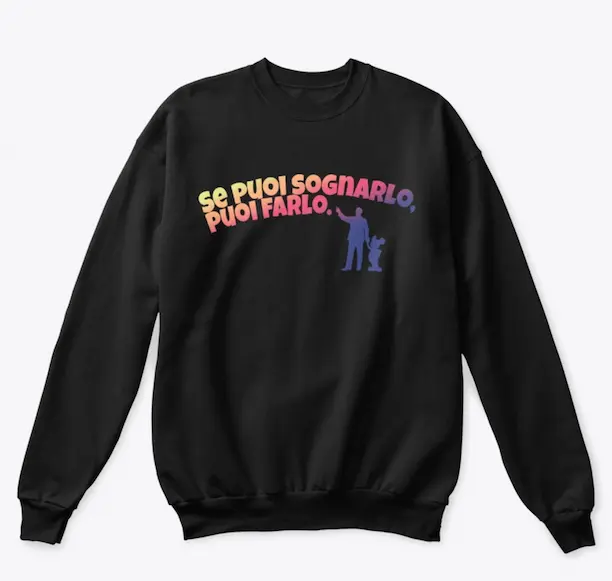
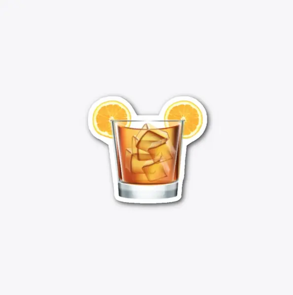

Abbigliamento Disney per le tue visite ai parchi a tema!
By Valentina
10 Luglio 2022
Magliette, Adesivi, borse - ecco la mia collezione di abbigliamento Disney!
Follia! In questa calda estate, e quando sto per sfiorare i 100 episodi del Podcast, ho deciso di lanciarmi in un'altra sfida personale: un online store in cui trovare magliette e molto altro che onorano i nostri posti preferiti: i parchi a tema!

In questo piccolo online store troverai tutti i design che ho creato personalmente - sempre con un occhio al copyright! Ci saranno cose divertenti, come la linea "Imagineer da poltrona" che uscirà a brevissimo (alcuni di voi hanno già apprezzato lo sticker uscito in anteprima), e abbigliamento più tradizionale, come la Walt Collection, che ritrae la frase più celebre di Walt Disney "Se puoi sognarlo, puoi farlo". Sto anche lavorando ad un'intera collezione ispirata alle attrazioni storiche dei parchi Disney, ma in futuro non mancheranno anche design più contemporanei.
Come vestire a Disneyland?
Questa è una domanda che molti mi fanno, preparando la loro vacanza nei parchi. Se per Walt Disney World, il classico abbigliamento estivo è un must - buone scarpe, shorts, maglietta, cappellino, poncho o impermeabile per le veloci pioggie estive!, il clima della California e quello di Parigi in particolare richiedono un po' più di preparazione e attenzione al periodo dell'anno: aggiungi sicuramente una felpa, anche in estate, e non te ne pentirai.
Se vuoi una lista dettagliata di cosa mettere in valigia per il tuo prossimo viaggio a Disneyland Paris, ti consiglio questo articolo di Lucia di Io Viaggio Con Topolino, in cui ti spiega il perfetto set up.
Una cosa da tenere a mente poi, è il Codice di Abbigliamento dei parchi. Per quanto riguarda Disneyland Paris, puoi leggere qualcosa di dettagliato a proposito direttamente dal sito del parco.
Il mio shop, mia mia promessa

Nello store, in cui aggiungerò prodotti ogni volta che mi verrà un'ispirazione, troverai solo design al 100% creati da me, e che io per prima vestirei.
Se vuoi supportare il progetto Aperitivo A Main Street, USA senza spendere un sacco, considera l'acquisto dell'adesivo ufficiale del podcast!
Come ho detto, i prodotti cambieranno spesso, e ne aggiungerò molti di nuovi. Per stare aggiornato sullo store, ti suggerisco di seguirmi su Instagram per foto e link in tempo reale!
VISITA IL MIO ONLINE SHOP!
Magliette, adesivi e tanto altro, tutti dedicati al mondo dei parchi
DAI UN'OCCHIATA
Se quest'articolo è stato interessante, non dimenticarti di seguirmi sul podcast “Aperitivo a Main Street, U.S.A.”, disponibile su Spotify, Anchor e tutte le altre maggiori piattaforme audio!